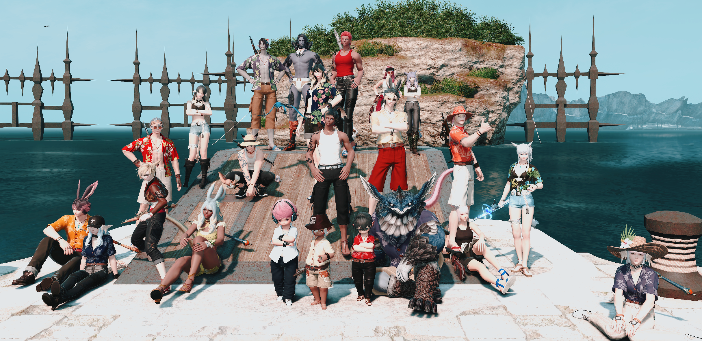
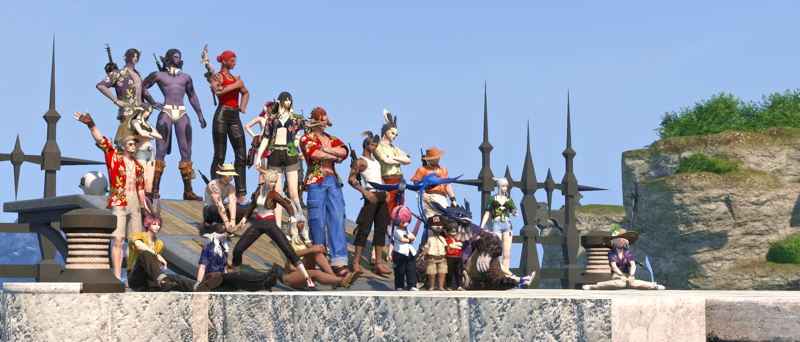

🦐 蝦捕蝦捕航行紀錄 🦐
那是一個風和日麗的午後，大家正哀號著裝潢格數不夠這件事， 溪口突然提問：「有人對蝦捕蝦捕這個稱號有興趣嗎？」
一開始當然是一堆人根本不知道那是什麼， 在溪口一番解說下，正式開啟了這次的航行。
也不知道怎麼就鬼轉成台客服裝瞎趴上船， 集合時間還在海都打群架拍合照，甚至嚇到路人。

photo by 溪口

photo by 溪口
原本預計是 24 人一起上船，但遠洋無法開團隊， 吉田啊讓我們團隊 24 人出門啊！
最後變成拆成三組 8 人， 原本以為可以一起撞上同艘船，最後卻被硬生生拆散（無緣）。
蝦捕蝦捕不是一條簡單的路，有些人差一點，有些人差很多點(?)， 下船後大家只好一起到熱炒店喝酒解悶，相約下次再一起搭船。
兄弟 17 一輩子。